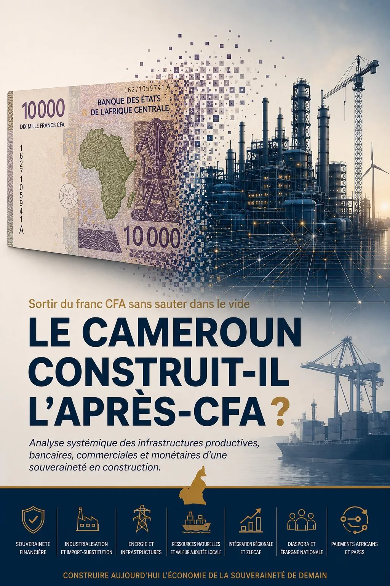

Le Cameroun construit-il l'après-CFA ?
Analyse systémique de la construction progressive des capacités productives, financières, bancaires et monétaires nécessaires à la souveraineté.

« On ne sort pas du franc CFA en imprimant une nouvelle monnaie. On en sort en construisant une économie qui peut survivre sans lui. »
Introduction — La souveraineté monétaire ne commence pas par l'impression d'un billet
Lorsqu'on parle de sortie du franc CFA, l'imaginaire collectif se concentre généralement sur un acte spectaculaire : dénoncer les accords monétaires, annoncer une nouvelle monnaie, modifier le régime de change, imprimer de nouveaux billets. Cette conception est politiquement séduisante, mais économiquement incomplète.
Une monnaie ne devient pas souveraine simplement parce qu'un gouvernement lui donne un nouveau nom. Elle devient souveraine lorsqu'elle repose sur une économie capable de produire une part importante de ce que sa population consomme, d'exporter suffisamment pour obtenir les devises nécessaires, de financer durablement ses entreprises, de rapatrier effectivement ses recettes extérieures, de maîtriser ses infrastructures de paiement et de protéger ses réserves de change.
Autrement dit, la souveraineté monétaire ne commence pas à l'imprimerie. Elle commence dans les champs, dans les usines, dans les centrales électriques, dans les banques, dans les ports, dans les systèmes de paiement et dans la capacité à vendre des biens au reste du monde.
Prises isolément, plusieurs décisions récentes peuvent sembler ordinaires : durcissement de la réglementation des changes, renforcement du rapatriement des recettes d'exportation, récupération des devises du secteur extractif, développement du marché des titres publics de la CEMAC, import-substitution industrielle, recapitalisation de BGFIBank Cameroun et reprise de Société Générale Cameroun par l'État, intégration de la BEAC au PAPSS et orientation vers la ZLECAf. Mais une lecture systémique fait apparaître une architecture cohérente : le Cameroun et la CEMAC réduisent progressivement certaines dépendances qui ont historiquement rendu l'architecture du franc CFA indispensable. Nous parlerons ici de sortie fonctionnelle, ou d'autonomisation de facto.
I. Comprendre le système du franc CFA avant de parler de sortie
Dans la CEMAC, le franc CFA est émis par la Banque des États de l'Afrique centrale (BEAC), commune au Cameroun, au Gabon, au Congo, au Tchad, à la RCA et à la Guinée équatoriale. Le régime repose historiquement sur une monnaie commune, une parité fixe avec l'euro, une convertibilité garantie par la France et un compte d'opérations auprès du Trésor français fixant à 50 % la quotité obligatoire des avoirs extérieurs nets déposés.
Le système est composé de couches superposées : monétaire (émission, taux directeurs), de change (parité, convertibilité, réserves), bancaire (financement, supervision), productive (ce que la CEMAC produit, importe et exporte) et technologique (compensation, règlements, paiements transfrontaliers).
La garantie de convertibilité est souvent présentée comme un avantage. Mais pourquoi une économie souveraine aurait-elle besoin qu'un État extérieur garantisse en dernier ressort la convertibilité de sa monnaie ? La réponse tient à la structure productive : une économie fortement dépendante des importations doit constamment obtenir des devises ; si ses recettes d'exportation sont insuffisantes ou mal rapatriées, sa monnaie devient vulnérable — et la garantie extérieure compense alors une faiblesse intérieure.
Il faut donc distinguer la sortie juridique (dénonciation des accords, nouvelle monnaie, nouveau régime de change — annonçable en quelques mois) de la sortie fonctionnelle (réduction progressive des dépendances qui rendent l'ancien système nécessaire — des années de construction). C'est cette seconde transformation que ce cahier observe.
II. La première bataille : récupérer et centraliser les devises
Une Banque centrale ne peut défendre efficacement une monnaie si elle ne maîtrise pas une part suffisante des devises générées par l'économie : un pays exportateur peut connaître une pénurie de devises si les recettes restent à l'étranger. C'est le paradoxe que la réglementation des changes cherche à corriger.
Le règlement communautaire de la CEMAC adopté en 2018, mis en œuvre à partir de 2019, impose la domiciliation bancaire et le rapatriement des recettes issues des exportations hors CEMAC1. Pendant longtemps, les entreprises extractives ont conservé une grande partie de leurs devises à l'extérieur — une contradiction, puisque les ressources étaient extraites en CEMAC sans alimenter ses réserves.
Le mécanisme historique obligeait les pays de la zone franc à centraliser une partie de leurs réserves auprès du Trésor français. Ce verrou a déjà sauté côté UEMOA en 2019. Pour la CEMAC, le mouvement est engagé : au sommet de mars 2023, les chefs d'État ont préconisé le retrait des représentants français des organes de décision de la BEAC, la clôture du compte d'opérations et le rapatriement des réserves au siège de la Banque centrale3.
Sans rapatriement, une future monnaie serait émise sur une base extérieure fragile. Le rapatriement des devises ne constitue donc pas la sortie du CFA : il construit l'une des conditions permettant qu'une sortie soit un jour techniquement envisageable.
III. Reconstruire une capacité monétaire à l'intérieur de la CEMAC
Un État qui dépend systématiquement de financements extérieurs en dollars ou en euros s'expose au risque de change. Le marché des titres publics de la CEMAC permet aux États de lever des ressources en monnaie locale : dette moins exposée au risque de change, épargne locale finançant l'investissement régional, courbe de taux nécessaire à toute politique monétaire autonome. La limite : emprunter en monnaie locale ne crée pas automatiquement de richesse productive ; le marché ne devient souverain que si l'épargne mobilisée finance la production future, non les seules dépenses courantes.
La Caisse des Dépôts et Consignations (CDEC), opérationnelle depuis 2023 après quinze ans de gestation, vise à collecter et rentabiliser des ressources dormantes pour financer l'État6. Le conflit avec la COBAC en 2022 illustre la friction entre souveraineté nationale et primauté du droit communautaire. Plus significatif encore : Yaoundé, siège de la BEAC depuis 1977, accueille la construction du Fonds Monétaire Africain, institution panafricaine conçue pour gérer les réserves et les politiques financières du continent — livraison envisagée à l'horizon 20287.
La souveraineté monétaire est aussi technologique : la circulation externe du CFA a longtemps suivi un axe unique — CEMAC → euro → système financier international. L'autonomie exige d'autres connexions : banques africaines, Afreximbank, marchés asiatiques, systèmes de paiement africains — ne plus dépendre d'une seule relation.
IV. L'industrialisation : construire l'économie qui donnera une valeur à la monnaie
Imaginons que le Cameroun crée demain une nouvelle monnaie. S'il continue à importer massivement denrées, médicaments et machines, les importateurs chercheront immédiatement à la convertir en dollars, euros ou yuans. Si les recettes d'exportation ne suffisent pas, la nouvelle monnaie pourrait subir dépréciation, inflation et perte de confiance. Changer de monnaie sans changer de structure productive revient à changer le nom de la dépendance sans supprimer la dépendance.
Une usine remplit trois fonctions monétaires que l'on oublie souvent : elle réduit la demande de devises en substituant la production locale à l'importation ; elle retient la valeur sur le territoire (salaires, sous-traitance, impôts, maintenance) ; et elle peut, une fois le marché national saturé, transformer une sortie de devises en entrée de recettes par l'exportation du surplus.
L'import-substitution n'est pas une invention récente. Dès les plans quinquennaux d'après l'indépendance, 23,86 % du budget étaient orientés vers l'industrialisation et la production énergétique (Song Loulou, Édéa, Lagdo), aux côtés d'industries nationales : Sosucam, Chococam, Sicam, Alucam, Sodeblé, Semry. La SND30 relance cette logique, avec l'ambition de porter le Cameroun au rang de Nouveau Pays Industrialisé en 2035 via un Plan Directeur d'Industrialisation et cinq « champions nationaux ».
Zoom sectoriel — L'énergie : la brique qui rend l'industrialisation possible
Une usine soumise aux coupures ou à une tension instable ne peut ni remplacer durablement les importations ni conquérir des marchés extérieurs. L'énergie est la première matière première de l'industrie.
| Centrale | Type | Puissance | Mise en service |
|---|---|---|---|
| Nachtigal | Hydroélectrique | 420 MW | 2024–2025 |
| Song Loulou | Hydroélectrique | 384 MW | 1981–1989 |
| Édéa | Hydroélectrique | 263 MW | 1954–1958 |
| Kribi Power | Thermique (gaz) | 216 MW | 2013 |
| Memve'ele | Hydroélectrique | 211 MW | 2018 |
| Lagdo | Hydroélectrique | 72 MW | 1984 |
| Lom Pangar | Centrale de pied | 30 MW | 2020 |
| Mekin | Hydroélectrique | 15 MW | 2018 |
La centrale de Kribi fonctionne avec le gaz du champ de Sanaga Sud — preuve qu'une ressource nationale peut être transformée en électricité plutôt que simplement exportée. À Douala, Gaz du Cameroun exploite un réseau de plus de 49 km et une quarantaine de grandes entreprises ont converti leurs brûleurs au gaz naturel, substituant une énergie locale au fuel importé11. Le portefeuille se diversifie encore (Kikot, interconnexions Nord-Sud et Cameroun-Tchad).
Zoom sectoriel — Douala et Kribi : deux ports complémentaires
Le port de Douala-Bonabéri demeure le principal port polyvalent du pays (conteneurs, bois, fruits, minerais, produits pétroliers, pêche) avec un trafic global de 12,48 Mt en 2022. La Phase II du terminal à conteneurs de Kribi, opérationnelle depuis 2025, porte la capacité annuelle à environ 1,2 million d'EVP grâce à un quai de 715 mètres et un tirant d'eau de 16 mètres12.
Zoom sectoriel — Le secteur extractif : du potentiel géologique aux projets
Une réserve géologique n'est ni une recette budgétaire ni une devise tant qu'elle n'est pas financée, extraite, transportée, vendue et rapatriée. Plusieurs projets sont passés de la cartographie à des permis et chantiers vérifiables (Minim-Martap — bauxite, réserves >500 Mt ; Mbalam-Nabeba — fer, montée vers 10 Mt/an ; Bipindi-Grand Zambi — fer ; Kribi-Lobé, Nkout, Bidzar, Colomine — fer, or, marbre, à des stades hétérogènes). La SNH estime les réserves de gaz naturel à environ 171,647 milliards de m³ au 30 avril 2024 — une base mobilisable pour l'électricité, le GNL, le GPL, les engrais, l'ammoniac et le méthanol13.
Zoom sectoriel — Zones industrielles, métallurgie et agro-industrie
La MAGZI administre notamment les zones de Bassa, Bonabéri, Yaoundé-Sud, Nomayos, Bafoussam, Ngaoundéré, Garoua, Limbé, Bertoua, Koumé-Bonis et Mandjou-Kano ; la seule zone de Bassa couvre près de 148 hectares. En métallurgie, Prometal 4 annonce 360 000 tonnes/an de produits finis (fil machine, fers, poutrelles, cornières) ; Prometal 5 / Progaz produit bouteilles de GPL et structures métalliques ; le projet PROALU vise la production locale de bobines d'aluminium. En agro-industrie, l'usine Neo Industry de Kékem (32 000 tonnes de fèves de cacao/an) illustre le passage de l'exportation brute vers le beurre, la poudre et la masse de cacao.
V. Le financement bancaire : transformer l'épargne en capacité industrielle
Une économie peut disposer de liquidités sans s'industrialiser : tout dépend de la destination du crédit. Un crédit qui finance surtout l'importation et la consommation entretient une économie de distribution ; un crédit qui finance les machines, l'usine et la production locale construit une capacité de substitution aux importations, puis d'exportation.
Un conflit doctrinal oppose la BEAC au FMI : Washington demande la suppression progressive du guichet spécial de refinancement dédié aux crédits productifs à moyen terme, que la BEAC défend comme un outil légitime de soutien à l'industrialisation — il a financé en 2025 41,2 milliards de FCFA pour le gisement de fer de Bipindi-Grand-Zambi et 31,3 milliards pour Camtel14.
VI. General Bank of Cameroon : récupérer un centre de décision bancaire
L'État ne rachète pas seulement des bâtiments et des agences : il récupère une licence bancaire, un réseau, des systèmes d'information, un portefeuille de crédits et un accès au marché interbancaire. Celui qui influence l'allocation du crédit influence indirectement la structure future de l'économie. Mais la nationalisation ne garantit pas automatiquement la souveraineté : une banque publique mal gouvernée peut devenir une caisse politique ou un refuge pour les entreprises insolvables.
| Institution | Position publique | Fonction potentielle |
|---|---|---|
| General Bank of Cameroon | 83,68 % après reprise des 58,08 % de Société Générale | Banque universelle : grandes entreprises, dépôts, réseau national |
| Commercial Bank-Cameroun | Participation publique très majoritaire | Banque commerciale restructurée |
| Banque Camerounaise des PME | Banque publique dédiée | Crédits courts, moyens et longs aux PME |
| SCB Cameroun | 49 % État ; 51 % Attijariwafa bank | Partenariat avec un groupe bancaire africain |
| Crédit Foncier du Cameroun | État et organismes publics dominants | Habitat, immobilier, construction |
VII. La ZLECAf : donner aux usines camerounaises un marché continental
Une usine moderne supporte des coûts fixes importants et doit produire en volume pour réduire son coût unitaire — le principe des économies d'échelle. Certaines industries ne peuvent atteindre leur taille optimale en se limitant au seul marché camerounais : leur marché pertinent doit devenir la CEMAC, le Nigeria, puis le continent via la ZLECAf. La position du Cameroun — façade maritime, ports de Douala et de Kribi, frontière avec le Nigeria, corridors vers le Tchad et la Centrafrique — lui donne un potentiel de plateforme industrielle et logistique régionale. Mais pour que ce marché continental fonctionne, il faut résoudre le problème du paiement entre monnaies africaines — c'est l'objet de PAPSS.
VIII. PAPSS : construire les rails financiers de l'après-dépendance
Une entreprise camerounaise qui achète au Nigeria dispose de francs CFA ; le fournisseur nigérian veut des nairas. Les circuits bancaires traditionnels ont longtemps imposé l'intervention d'une monnaie tierce (euro ou dollar), augmentant coûts, délais et dépendance extérieure. Le circuit panafricain devient : FCFA → PAPSS → naira.
PAPSS ne crée pas une monnaie africaine : il construit le tuyau. Il ne supprime pas les taux de change ni les déséquilibres commerciaux, mais il permet d'échanger entre monnaies africaines dans un système africain de paiement — un rail que pourrait demain utiliser une autre architecture monétaire. Le système de paiement est neutre : c'est l'appareil productif qui détermine si le pays entre dans le réseau comme acheteur ou comme vendeur.
IX & X. La chaîne stratégique complète et son séquençage
Onze briques relient l'ensemble de l'analyse : rapatrier les devises, renforcer la Banque centrale, mobiliser l'épargne régionale (marché des titres, CDEC), produire, financer la production, maîtriser l'allocation du capital, construire une architecture monétaire propre (Fonds Monétaire Africain), élargir le marché, organiser les paiements africains et diversifier les partenariats. Assemblées, elles dessinent une séquence : ressources → énergie → réseaux et zones industrielles → épargne régionale et banques → usines → substitution aux importations → ports → exportations vers la CEMAC, le Nigeria et la ZLECAf → PAPSS → rapatriement des recettes → réserves de la BEAC et Fonds Monétaire Africain → capacité future de choix monétaire.
| Date | Décision |
|---|---|
| 2018–19 | Réglementation des changes |
| 2022 | Conflit CDEC–COBAC |
| Mars 2023 | Sommet CEMAC — retrait français préconisé |
| 2023 | 7ᵉ emprunt obligataire |
| Juillet 2025 | Cession Société Générale Cameroun → General Bank of Cameroon |
| Septembre 2025 | Sommet de Bangui — débat sur la parité et le nom de la monnaie |
| Février 2026 | Recapitalisation BGFIBank |
| Juillet 2026 | La BEAC rejoint le PAPSS |
| Horizon 2028 | Siège du Fonds Monétaire Africain en chantier (Yaoundé) |
La monnaie ne se situe pas au commencement de ce processus. Elle se situe à son aboutissement.
XI. Pourquoi cette stratégie peut être qualifiée de panafricaniste
Le panafricanisme économique ne se réduit pas aux discours, aux drapeaux ou à l'hostilité envers l'Occident. Il consiste à construire des banques, des infrastructures, des industries, des marchés et des systèmes de paiement africains — une circulation africaine du capital : ressources africaines → capitaux africains → banques africaines → entreprises africaines → production africaine → marché africain → paiement africain → réinvestissement en Afrique. Lorsque cette boucle fonctionne, l'Afrique cesse progressivement d'être seulement fournisseur de matières premières et cliente de circuits financiers extérieurs : elle devient productrice, transformatrice, créancière et émettrice de solutions financières.
XII. Les limites et les risques de la thèse
- Absence de calendrier officiel : aucune décision publique n'indique une date de sortie, une nouvelle monnaie ou un régime de change futur.
- Industrialisation superficielle : une usine peut être présentée comme locale tout en important machines, pièces et énergie — il faut mesurer le taux de contenu local, non le nombre d'usines.
- Gouvernance bancaire : General Bank of Cameroon ne deviendra un outil de souveraineté que si elle reste professionnelle, rentable et indépendante dans l'évaluation du risque.
- PAPSS peut faciliter les importations plus que les exportations : si les industries ne sont pas compétitives, l'intégration financière ne remplace ni l'énergie, ni la productivité, ni la qualité.
- Le franc CFA reste techniquement en place : la parité et le compte d'opérations demeurent dans les statuts de la BEAC (30 juin 2025) ; les intentions actées à mars 2023 et Bangui précèdent la modification juridique sans s'y substituer.
- Le Fonds Monétaire Africain reste à prouver : son siège est encore en chantier (livraison 2028) ; une institution ne devient un outil de souveraineté que lorsque sa capacité de financement, sa gouvernance et son indépendance sont démontrées.
XIII. Les conditions d'une véritable souveraineté monétaire
- Production compétitive : électricité, transport, ports, fiscalité, foncier, délais administratifs, qualité, formation technique.
- Sécurité alimentaire : une monnaie est vulnérable si le pays doit importer massivement pour nourrir sa population (riz, maïs, poisson, lait, huiles).
- Transformation locale profonde : passer du bois brut aux meubles, du cacao brut aux produits chocolatés, du pétrole brut au raffiné.
- Discipline budgétaire : une monnaie autonome résiste mal aux déficits incontrôlés et à la création monétaire excessive.
- Réserves suffisantes : financer les importations, intervenir sur le marché et résister aux chocs externes.
- Gouvernance crédible : transparence, indépendance de la Banque centrale, lutte contre la corruption.
Une future monnaie devrait enfin choisir clairement entre parité fixe, flottement administré, panier de monnaies ou union monétaire réformée. Aucune option n'est automatiquement souveraine : chacune comporte des coûts, des avantages et des disciplines.
Conclusion générale — Le Cameroun construit-il l'économie de l'après-CFA ?
La réponse doit être nuancée. Le Cameroun et la CEMAC ont engagé ou renforcé la réglementation des changes, le rapatriement des recettes d'exportation, la centralisation des réserves, le développement des marchés financiers régionaux et de la CDEC, l'industrialisation, le financement bancaire africain, la reprise d'un actif bancaire majeur, l'intégration au PAPSS et à la ZLECAf, et la construction à Yaoundé du Fonds Monétaire Africain. Chacune de ces décisions réduit une dépendance particulière.
La sortie du CFA ne sera véritable ni parce qu'un billet aura changé de couleur, ni parce qu'un discours aura été prononcé. Elle sera réelle lorsque le Cameroun et la CEMAC pourront produire davantage, importer moins, transformer leurs ressources, rapatrier leurs devises, maîtriser leurs banques et organiser leurs propres paiements.
Le billet n'est pas la souveraineté. Il n'en est que la représentation visible. La souveraineté réelle se trouve dans le paysan qui nourrit la nation, dans l'usine qui transforme, dans la banque qui finance la production, dans le port qui expédie les marchandises et dans la Banque centrale qui récupère les devises. Dans cette perspective, la monnaie n'est pas le commencement de la souveraineté. Elle en est le couronnement.
Notes
- BEAC, réglementation des changes de la CEMAC (2018, entrée en vigueur en 2019).
- BEAC, instruction relative au relèvement du taux de rapatriement des devises du secteur extractif, avril 2026 [référence à compléter].
- Sommet de la CEMAC, mars 2023 (retrait des représentants français des organes de la BEAC, clôture du compte d'opérations, rapatriement des réserves) — Africtelegraph / Agence Ecofin [à confirmer].
- BEAC, rapport annuel et statistiques monétaires (réserves de change et taux de couverture extérieure, 2025–2026).
- MINFI / Direction générale du Trésor ; Agence Ecofin ; L'Économie (marché des titres publics de la CEMAC — BVMAC).
- Gabon Media Time (Caisse des Dépôts et Consignations du Cameroun ; différend CDEC–COBAC, 2022).
- Fonds Monétaire Africain — siège de Yaoundé, livraison envisagée à l'horizon 2028 — Agence Ecofin [à confirmer].
- Sommet de Bangui, septembre 2025 — CamerVibes Magazine ; Actu Cameroun.
- MINEE ; EDC / Banque mondiale (parc de production électrique et taux d'accès à l'électricité).
- MINEE (parc de production électrique camerounais).
- SNH (gaz de Sanaga Sud–Kribi) ; Gaz du Cameroun (réseau de distribution de Douala).
- Ports autonomes de Douala et de Kribi (trafic 2022 ; terminal de Kribi, Phase II, 2025).
- SNH (réserves gazières au 30 avril 2024) ; MINMIDT / CIMEC (projets miniers).
- BEAC (guichet spécial de refinancement) ; MINFI (financements Bipindi-Grand-Zambi et Camtel, 2025).
- Recapitalisation de BGFIBank Cameroun (20 → 50 milliards de FCFA), février 2026 — Agence Ecofin / MINFI [à confirmer].
- Société Générale / General Bank of Cameroon (cession du 15 juillet 2025).
- Afreximbank / PAPSS ; BEAC — systèmes de paiement (adhésion de la BEAC au PAPSS, juillet 2026).
- BEAC — statuts (parité fixe et compte d'opérations, mis à jour au 30 juin 2025).
SOURCES PRINCIPALES
BEAC (réglementation des changes, systèmes de paiement, rapport annuel 2023, marché des titres publics) · Afreximbank / PAPSS · MINEPAT (SND 2020–2030) · MINEE (Nachtigal, Lom Pangar, Kikot, interconnexions) · EDC / Banque mondiale · SNH (réserves gazières, Sanaga Sud–Kribi, gaz de Logbaba) · Globeleq · Gaz du Cameroun · Prometal · Ports autonomes de Douala et de Kribi · MAGZI · MINMIDT / CIMEC (projets miniers) · MINFI / Direction générale du Trésor · SCB Cameroun, Crédit Foncier du Cameroun, MINPMEESA · Société Générale / General Bank of Cameroon · Direction générale du Trésor (France) · Africtelegraph · CamerVibes Magazine, Actu Cameroun (sommet de Bangui) · Agence Ecofin · Gabon Media Time (CDEC) · L'Économie.